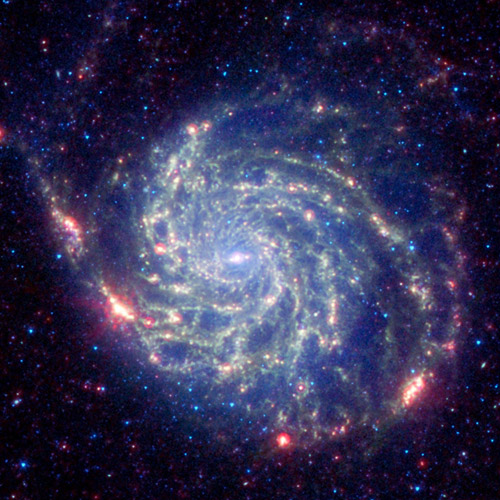
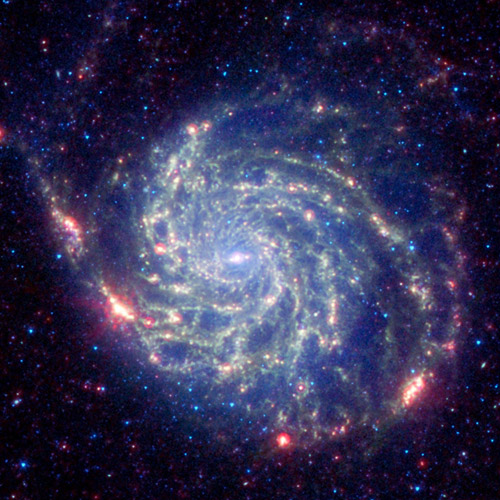
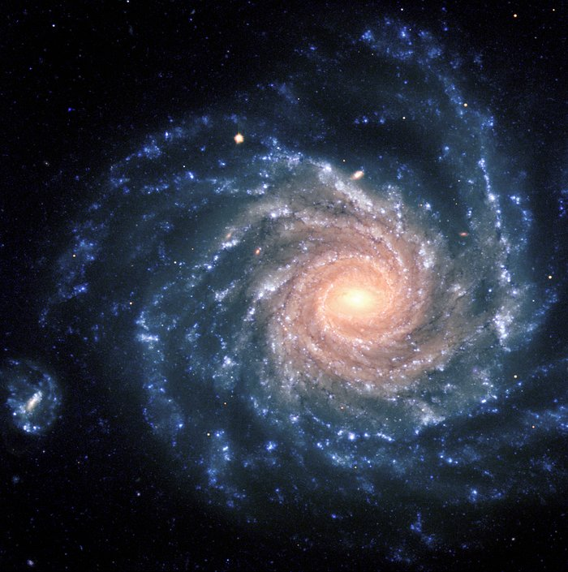
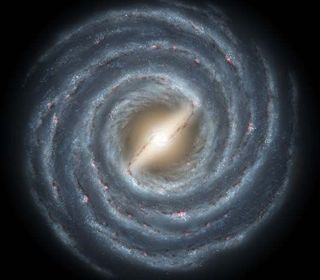
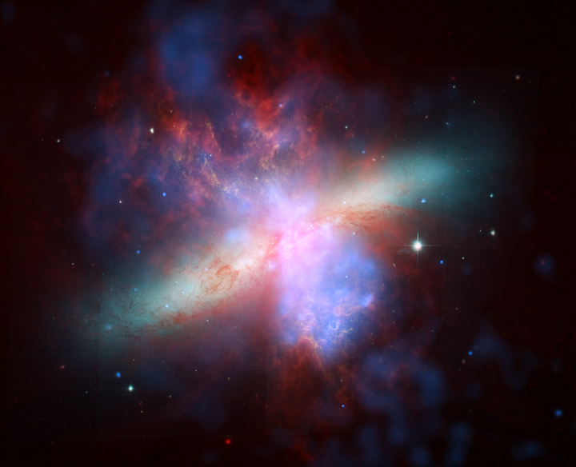
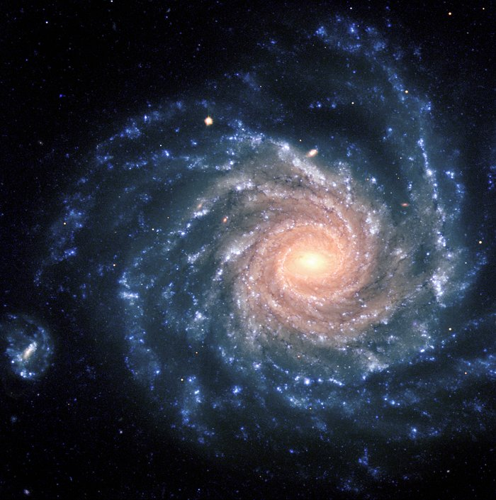
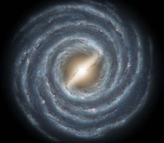
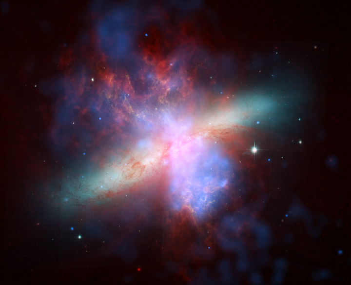

A galaxy is a huge collection of gas, dust, and billions of stars and their solar systems. A galaxy is held together by gravity. Our galaxy, the Milky Way, also has a supermassive black hole in the middle.
When you look up at stars in the night sky, you’re seeing other stars in the Milky Way. If it’s really dark, far away from lights from cities and houses, you can even see the dusty bands of the Milky Way stretch across the sky.
There are many galaxies besides ours, though. There are so many, we can’t even count them all yet! The Hubble Space Telescope looked at a small patch of space for 12 days and found 10,000 galaxies, of all sizes, shapes, and colors. Some scientists think there could be as many as one hundred billion galaxies in the universe.
Some galaxies are spiral-shaped like ours. They have curved arms that make it look like a pinwheel. Other galaxies are smooth and oval shaped. They’re called elliptical galaxies. And there are also galaxies that aren’t spirals or ovals. They have irregular shapes and look like blobs. The light that we see from each of these galaxies comes from the stars inside it.
Sometimes galaxies get too close and smash into each other. Our Milky Way galaxy will someday bump into Andromeda, our closest galactic neighbor. But don’t worry. It won’t happen for about five billion years. But even if it happened tomorrow, you might not notice. Galaxies are so big and spread out at the ends that even though galaxies bump into each other, the planets and solar systems often don’t get close to colliding.

 

 




